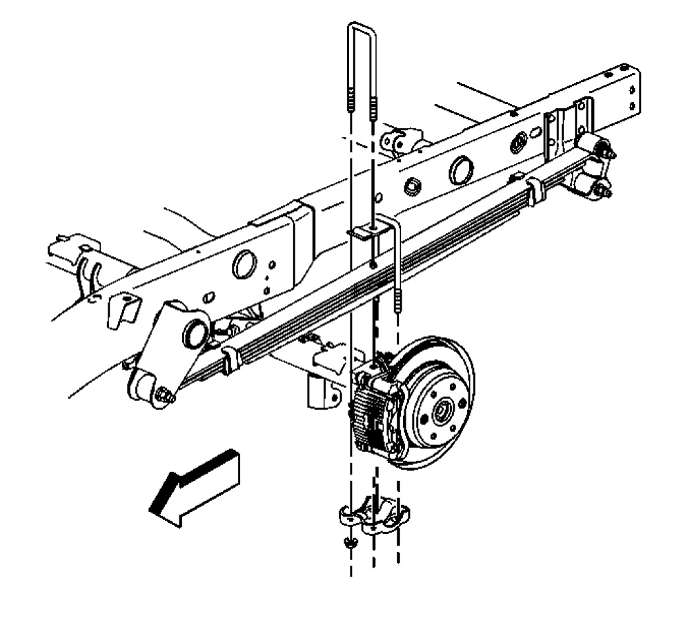

25 Series
Rear Axle Replacement (25 Series)
Removal Procedure
1. Raise and support the vehicle.
2. Place jack or utility stands (such as GMDE 123-B67313) at the front end of the vehicle.
3. Drain the axle lubricant from the rear axle. Refer to Differential Oil Replacement Service and Repair.
4. Disconnect the propeller shaft. Refer to Rear Propeller Shaft Replacement Service and Repair.
5. Remove the tire and wheel assemblies.
6. Disconnect the parking brake cable. Refer to Parking Brake Rear Cable Replacement - Left Side and Parking Brake Rear Cable Replacement - Right Side Service and Repair.
7. Remove the brake line bracket bolts. Suspend the brake lines from the vehicle with heavy mechanics wire.
8. Remove the brake calipers from the brake caliper mounting brackets. Do not disconnect the brake lines. Suspend the calipers from the vehicle with heavy mechanics wire. Refer to Rear Brake Caliper Replacement Removal and Replacement.
9. Disconnect the shock absorbers from the axle brackets. Refer to Shock Absorber Replacement Service and Repair.
10. Remove the vent hose from the rear axle vent fitting. Refer to Vent Hose Replacement Removal and Replacement.
11. Remove the nuts and the washers from the U-bolts.
12. Remove the U-bolts, the spring plates and the spacers form the axle assembly.
13. Lower the axle assembly.
Installation Procedure

1. Place the rear axle assembly under the vehicle.
2. Align the rear axle assembly with the springs.
3. Connect the spacers, the spring plates and the U-bolts to the rear axle.
4. Raise the rear axle assembly into position.
Notice: Use the correct fastener in the correct location. Replacement fasteners must be the correct part number for that application. Fasteners requiring replacement or fasteners requiring the use of thread locking compound or sealant are identified in the service procedure. Do not use paints, lubricants, or corrosion inhibitors on fasteners or fastener joint surfaces unless specified. These coatings affect fastener torque and joint clamping force and may damage the fastener. Use the correct tightening sequence and specifications when installing fasteners in order to avoid damage to parts and systems.
5. Install the washers if equipped and the nuts to the U-bolts.
Tighten
Tighten the nuts to 72 Nm (53 lb ft).
6. Install the vent hose to the rear axle vent fitting. Refer to Vent Hose Replacement Removal and Replacement.
7. Connect the shock absorbers to the rear axle. Refer to Shock Absorber Replacement Service and Repair.
8. Install the brake calipers. Refer to Rear Brake Caliper Replacement Removal and Replacement.
9. Install the brake lines and the brake line bracket bolts to the axle.
10. Connect the parking brake cable. Refer to Parking Brake Rear Cable Replacement - Left Side and Parking Brake Rear Cable Replacement - Right Side Service and Repair.
11. Install the tire and wheel assemblies.
12. Connect the propeller shaft. Refer to Rear Propeller Shaft Replacement Service and Repair.
13. Fill the axle with lubricant. Use the proper fluid. Refer to Differential Oil Replacement Service and Repair.
14. Remove the utility stands.
15. Lower the vehicle.